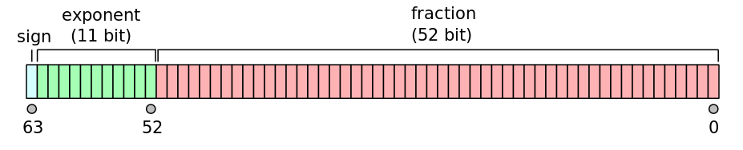

0.1+0.2==0.3为false？
这个问题在红宝书中就已经提及了，也是个很常见的面试题，只不过书中的解释不是那么让人满意，原理没有讲的很透彻。于是在这里把原理记录一下，同时也对JavaScript中数字的存储模式做一个梳理。
0.1和0.2在js中究竟是多大？
既然已经知道0.1+0.2!=0.3，那么要探究所以然，就要知道0.1和0.2在js中究竟是个什么东西。计算机处理数据和进行计算，最终都会落到二进制上，对于0.1这样的浮点数来说，js需要一种二进制的保存方法来表达这样的数。
那么js选择的是IEEE 754 双精度64位浮点数，具体存储方式如下图所示。

可以看到，浮点数在js里由三部分组成：符号位、11位的指数位和52位的尾数位，所以一个数字可以通过如下公式表达出来。
s∗f∗2e
那么接下来就可以通过这个公式得出0.1和0.2在js中的二进制表达。整数除二取余，倒序排列；小数乘二取正，顺序排列。
那么0.1的二进制为0.0 0011 0011 0011…0011循环，而0.2为0.0011 0011 0011…0011循环，其实到这里就可以部分解释为什么0.1+0.2会出现结果不对（不准）的情况，一个循环数字是无法在计算机中准确表达和存储的。接下来，使用上述的方法进行表示：
e0.1=−4
f0.1=1.1001100110011001100110011001100110011001100110011010
e0.2=−3
f0.2=1.1001100110011001100110011001100110011001100110011010
到这里就得到了js眼中，也就是计算机眼中的0.1和0.2了。
二者相加时发生了什么
相加时有个点需要注意，两者指数不同，需要挪个位使之对齐，类似于竖式计算中的补零操作，只不过在这里一般右移，这会导致小数部分超过52位，右移溢出低位数字，对精度影响不大，但这又是一处导致计算结果不对的地方了。之后会得到这样的结果。
ey=−3
fy=10.0110011001100110011001100110011001100110011001100111
接着保留一位整数，发现小数部分位数超过52位了，这里不再使用右移溢出的方法了，而是四舍五入优先考虑偶数，因此再一次损失了精度。
ey=−2
fy=1.0011001100110011001100110011001100110011001100110100
y(2)=fy∗2ey=0.010011001100110011001100110011001100110011001100110100
y(10)=0.30000000000000004
最后得出的答案和js中直接0.1+0.2得出的一致。
扩展
其实在这个问题的探究上，还能获得js中最大最小值的计算方法。回到IEEE 754 双精度64位浮点数的定义中，根据ECMAScript 5 规范，e的范围是[-1074, 971]，这样可以计算出Number.MAX_VALUE和Number.MIN_VALUE的值。
Number.MAX_VALUE=1∗(253−1)∗(2971)≈1.79e+308
Number.MIN_VALUE=1∗1∗(2−1074)≈5e−324